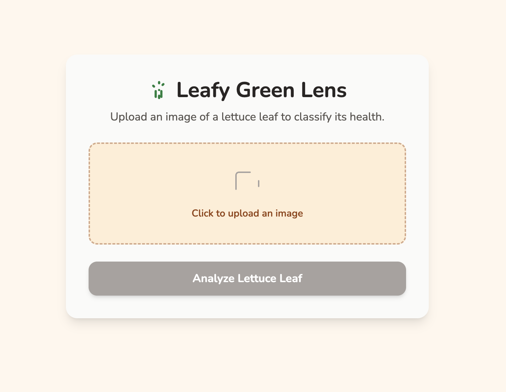
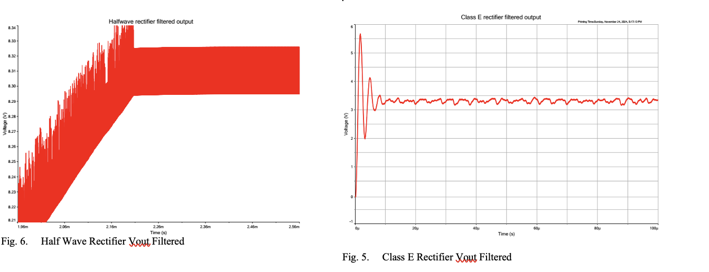
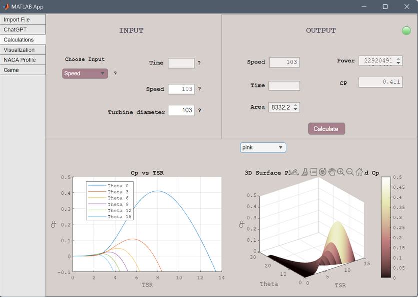
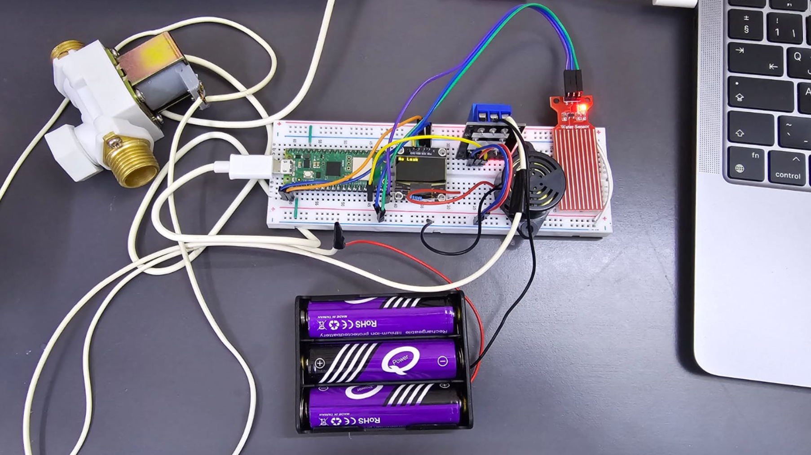
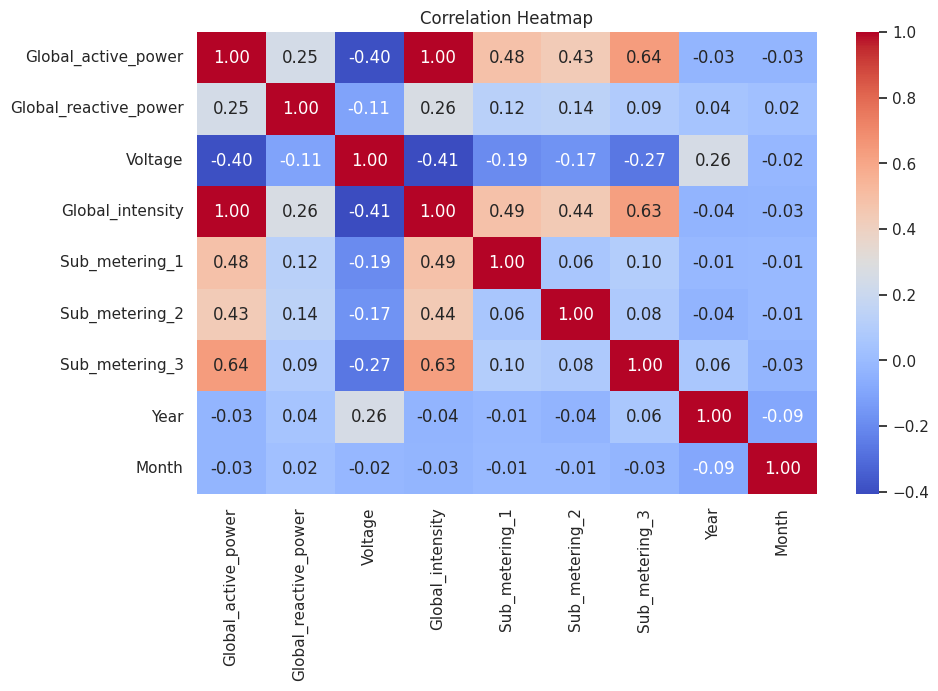
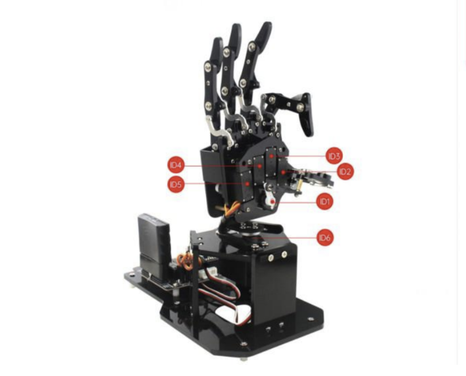

Alaa Aldybous
Electrical & Computer Engineering Student
Machine Learning • Signal Processing • Embedded Systems
Where engineering meets imagination
Explore my Portfolio
About me

I'm an Electrical and Computer Engineering student merging analytical precision with creative design. I've engineered autonomous hardware, developed data-driven AI systems in Python and MATLAB, published multiple academic papers, and currently leads the IEEE Robotics and Automation Society chapter at my university.
I love turning complex ideas into clear, practical solutions—whether in code, design, or leadership. Beyond tech, I draw, read fantasy and YA novels, watch K-dramas, and practice Taekwondo—keeping my balance between logic and imagination.
I value clarity, purpose, and impact. To me, engineering is just another form of art.
Projects

AgriBird: A Lightweight Deep Learning for Autonomous Plant Health Management in Smart Hydroponic Farms
The Challenge: Automating real-time crop disease detection in hydroponic greenhouses to prevent massive agricultural losses.
The Engineering: Led the hardware-software integration of an autonomous robotic platform using NVIDIA Jetson and custom ML pipelines.
The Result: Awarded 1st Place at the international GCC Robotics Challenge (Final Round). Selected fo the Geneva International Exhibition of Inventions, and currently undergoing active patent preparation.
*Note: Due to an active patent application, specific proprietary schematics are confidential.

Data validated on the MIT-BIH Database. Figure adapted from forthcoming 2026 ICEEE Conference proceedings (Antalya, Turkey).
Hybrid ECG Denoising: Algorithmic Adaptive System
The Challenge: Balancing high signal fidelity with low computational latency for real-time cardiac wearable devices.
The Engineering: Architected a mode-switching framework using DWT and VMD that optimizes adaptive signal cleaning.
The Result: Achieved a 1562x speedup and +7.35 dB SNR gain; accepted for publication at ICEEE 2026.

Figure adapted from 2025 ICECE Conference proceedings (China).
Wireless Power Transfer: High-Efficiency Class-E Rectifier Design
The Challenge: Transitioning Electronics II research into a multi-disciplinary study on high-frequency energy delivery for IoT.
The Engineering: Managed the comparative analysis of PMOS-based Class-E rectifiers against traditional bridge topologies in Multisim.
The Result: Validated superior conversion efficiency and significantly reduced ripple in the MHz range.

Optimizing Wind Turbines for Maximum Power Generation
The Challenge: Visualizing complex, physics-based multi-variable relationships for renewable energy education.
The Engineering: Developed an interactive app using MATLAB App Designer and integrated ChatGPT interfaces for real-time technical support.
The Result: Functional learning module that identifies optimal parameters for maximum turbine power generation efficiency.

I-V Performance Analysis of Solar Cells Using Numerical Method
The Challenge: Modeling the non-linear electrical behavior of MSX-60 solar panels under varying environmental conditions to predict power output.
The Engineering: Developed a web application using C++ and Flask that utilizes the Newton-Raphson numerical method to solve the transcendental diode equations.
The Result: Successfully modeled and visualized the I-V characteristics of solar cells under different conditions.Created a tool capable of accurately simulating I-V and P-V performance curves for renewable energy analysis under different temperature and irradiance levels.

Smart Water Leakage Detection & Prevention System
The Challenge: Developing an autonomous, low-latency solution to detect residential leaks and prevent water damage.
The Engineering: Built a closed-loop control system using a Raspberry Pi Pico and flow sensors to trigger emergency shut-off valves.
The Result: Successfully prototyped a fail-safe IoT solution for domestic resource conservation and damage prevention.

Classifying Heart Abnormalities Using ECG Signals and Machine Learning
The Challenge: Accurately identifying cardiac state abnormalities within noisy Electrocardiogram (ECG) data environments.
The Engineering: Implemented a signal processing and ML pipeline in MATLAB for automated feature extraction and classification.
The Result: Developed a high-accuracy model capable of reliably distinguishing between normal and abnormal cardiac cycles.

Weather Condition Prediction
The Challenge: Classifying diverse weather summary conditions using large-scale historical meteorological datasets.
The Engineering: Leveraged ensemble learning methods and robust data preprocessing in Python to optimize classification accuracy.
The Result: Built a reliable predictive model for data-driven meteorological analysis and forecasting.

Household Power Consumption Prediction
The Challenge: Forecasting residential global active power consumption using high-resolution, non-linear time-series data.
The Engineering: Applied regression models and extensive feature engineering in Python to analyze and predict consumer energy patterns.
The Result: Created an end-to-end predictive model for efficient smart grid and household energy management.

'Uhand': Bionic Hand Control System Integration
The Challenge: Adapting a commercial 5-DOF bionic hand platform to accept custom wireless remote-control telemetry for real-time gesture manipulation.
The Engineering: Mapped a 6-channel RC transmitter and Bluetooth app to an Arduino microcontroller; reprogrammed default servo logic to translate remote inputs into multi-degree-of-freedom finger articulations.
The Result: Successfully overrode the base platform to create a custom-controlled robotic palm, demonstrating strong skills in hardware integration and wireless signal mapping.

Digital Tachometer with Infrared Rotation Sensing
The Challenge: Implementing a purely hardware-based rotational speed measurement system under strict local component availability constraints.
The Engineering: Evaluated multiple reference schematics to build a logic pipeline using a TSOP1736 receiver and NE555 timer; adapted the design using BCD-to-7-segment alternatives (CD4511/CD4026) when primary parts were unavailable.
The Result: Successfully assembled and verified a functional logic circuit for real-time RPM monitoring, showcasing strong schematic-reading and component-level troubleshooting skills.

CSS Art Challenges
The Origin: Constructing complex visual illustrations and layouts using zero external image files or libraries.
The Engineering: Utilized advanced CSS properties and positioning to architect detailed visual art solely through code.
The Result: A technical gallery demonstrating front-end precision and creative problem-solving with core web standards.
Research Paper
Signal-Quality-Driven Hybrid ECG Denoising Using Optimized Wavelet and Variational Mode Decomposition
The Engineering: Conceptualized and engineered the core mathematical framework for an adaptive mode-switching system between DWT and VMD.
- Design: Architected the decision logic for real-time fidelity-latency optimization.
- Validation: Achieved a 7.35 dB SNR gain and 1562x speedup on the MIT-BIH database.
*Status: Formally accepted for April 2026; final manuscript revisions in progress.
Comparative Analysis of Rectifier Designs for Wireless Power Transfer in Sustainable Smart Cities
The Contribution: Contributed to the comparative analysis and technical documentation of high-frequency WPT receiver circuits as part of a multi-disciplinary research team.
- Research Synthesis: Collaborated on the evaluation of different rectifier topologies, focusing on the trade-offs between half-wave, full-wave, and Class-E designs.
- Manuscript Development: Co-authored the comparative results and conclusion, detailing the efficiency benefits of Class-E configurations for MHz-range applications.
*Status: Presented in 2025; currently undergoing final indexing for the IEEE Xplore digital library.
'Fiction to Function': Shaping Renewable Energy Education with MATLAB and ChatGPT-Driven Environments
The Contribution: Collaborated on a group research project to build an interactive platform that bridges renewable energy theory with AI-assisted learning.
- Physics Simulation: Co-developed the mathematical logic to visualize how wind speed and pitch angles affect power generation.
- AI Implementation: Integrated a ChatGPT-driven interface within MATLAB to provide users with real-time technical support and guidance.
*Published: Archived in IEEE Xplore digital library [DOI: 10.1109/LT60867.2024.10469675].
View Published Paper →Experience
Chair, IEEE Robotics & Automation Society
Effat University IEEE Student Branch
- Led and managed a team of 7 executive members to organize workshops and events.
- Organized a bristlebot activity for a university club fair.
- Coordinated with the engineering department for a robotics outreach event for a visiting school.
- Managed the club's budget and technical resources for projects.
Skills

Core Competencies
- Signal Processing & Denoising
- Machine Learning Modeling
- Control Systems & System Simulation
- Embedded System Prototyping
Software & Languages
- Languages: Python, C++, MATLAB, HTML/CSS
- Frameworks: PyTorch, Scikit-learn
- Engineering: Simulink, App Designer, Multisim, CassyLab
- Workflow: Git, GitHub, Figma, MS Office
Hardware & Lab
- Hardware: Nvidia Jetson, Raspberry Pi, Arduino
- Instrumentation: Oscilloscope, Laboratory Equipment
- Practical: Circuit Prototyping, Soldering
Education
Effat University
Bachelor's degree in Electrical & Computer Engineering
- Achieved Effat College of Engineering's Dean's List for the academic years 2022-2023 & 2023-2024 & 2024-2025.
Contact me